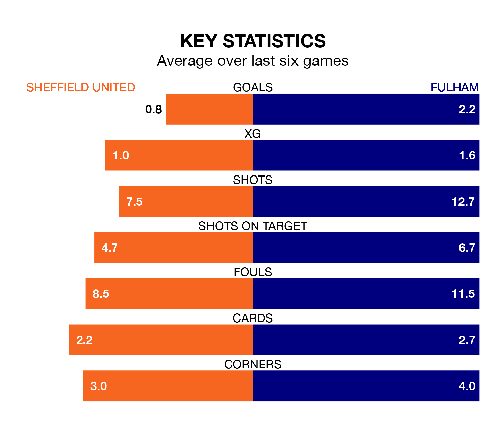

Fulham are strong favourites to take all three points despite Sheffield United's home advantage in Saturday's match at Bramall Lane.
*Betting Company* are offering odds of 1.83 on Fulham sealing the win, with the visitors sitting 12th in the Premier League table.
United, who are 20th in the league and 24 points behind the Cottagers, are priced at 3.97 to win. A draw is set at 3.78.
With Bernd Leno between the sticks, Fulham can rely on one of the league's safest pair of hands. He has kept eight clean sheets in his 29 appearances this season, and only one other 'keeper – Arsenal's David Raya – has been able to prevent the opposition scoring on more occasions in the Premier League.
In United's net, Wes Foderingham has one clean sheet in 25 games. He has conceded a goal every 39 minutes, 70% more often than the 67 minutes between goals for Leno.
In the last 10 years, United and Fulham have played each other on eight occasions. United won two of them, Fulham five, and they drew once.
On average, the Blades scored 1.4 goals and the Cottagers 2.0 in those matches.
Their last meeting was on October 7, when Fulham won 3-1 at home.
The Blades are in bad form in the Premier League, with one win and a draw from their last six games.
With four wins and two losses over that period, the Cottagers's form is much better – they have taken 12 points from 18, compared to the hosts' four.
With 24 goals in 28 games so far this season, United are the league's lowest scorers with 0.9 goals per game. And they are conceding more than average, letting in 74 goals at a rate of 2.6 per game.
The away side are also below average scorers, with 1.5 goals per game, compared to a league average of 1.6. They have also conceded 1.5 goals per game.
United's last match was on March 9, a 2-2 draw against AFC Bournemouth, with Gustavo Hamer and Jack Robinson getting the goals for the Blades.
Fulham beat Tottenham Hotspur 3-0 last time out, on March 16, with Rodrigo Muniz (two) and Saša Lukić on the scoresheet.
Updated: 10:19 (UTC), 22/03/24